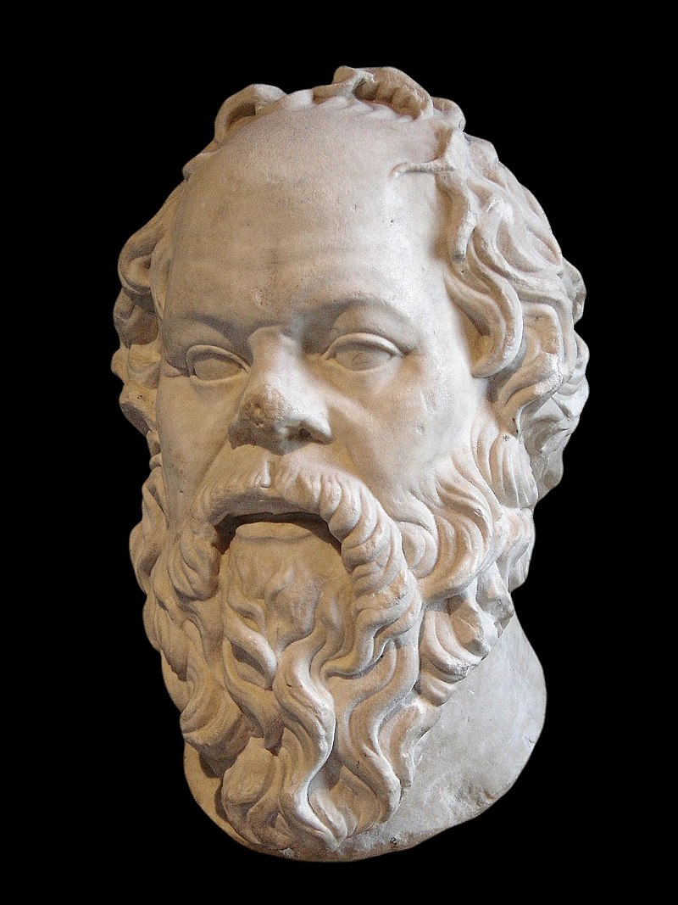

Socrates on Knowing Nothing
Philosophy in Quotes
If you like reading about philosophy, here's a free, weekly newsletter with articles just like this one: Send it to me!
Socrates (470–399 BC) was an ancient Greek philosopher, often cited as one of the “fathers” of philosophy, especially of a particular method of philosophical questioning. He was the teacher of Plato (428/427–348/347), who, in turn, was the teacher of Aristotle. These three together are certainly the most influential trio of thinkers of all time in the Western philosophical tradition.
Socrates left no written works of his own. Part of his famous method was not to write down theoretical works, but to engage the citizens of Athens in discussions at the marketplace. Often, he would ask them questions about something they were supposed to be experts on, in the manner of children who keep asking “but why …?” after every reply. Sooner or later, this method made it impossible for the supposed expert to further justify his assumptions. And then, Socrates would triumph, having shown that the person did not actually know as much as they assumed.
In time, having in this way publicly humiliated the most prominent citizens of Athens, Socrates had created a formidable alliance of enemies. When they thought that the time was right, they accused Socrates of corrupting the youth with his teachings and brought him to court.

The trial of Socrates became legendary, because the old philosopher did not only refuse to apologise. Instead, he asked his accusers to thank him with a lifelong pension for his service to the city, and kept making fun of them. Unsurprisingly, they sentenced him to death.

It is today understood that even then Socrates would have been able to escape the sentence, as others had done before him. He could have left the city and gone somewhere else to live. But, in his typical stubbornness, he refused. By forcing his accusers to go through with the execution, he became a martyr for the ideals of truthfulness and his name and story became immortal.

Plato, The Apology of Socrates.This book contains five Platonic dialogues, among them the famous Apology of Socrates. There are many different translations available, so if you are not sure, look around Amazon for more options.
Amazon affiliate link. If you buy through this link, Daily Philosophy will get a small commission at no cost to you. Thanks!
The actual quote above cannot be found in Plato’s works. There are similar statements in Socrates’ Apology, which is Plato’s recollection of the speech that Socrates gave in court. “Apology” here does not mean what it means today in English. For the ancient Greeks, an apologia was just a defence in court, not a plea for forgiveness.
Let’s look at some of the statements that we can find in Socrates’ Apology, as it has come to us through Plato’s retelling (transl. Benjamin Jowett):
And this is the point in which, as I think, I am superior to men in general, and in which I might perhaps fancy myself wiser than other men, – that whereas I know but little of the world below, I do not suppose that I know.
Note that here Socrates does not say that he knows “nothing.” Instead, he says that he does know “little.” The main point is not that he wants to glorify ignorance, but to expose those who pretend to know things that they don’t.
Well, although I do not suppose that either of us knows anything really beautiful and good, I am better off than he is – for he knows nothing, and thinks that he knows. I neither know nor think that I know. In this latter particular, then, I seem to have slightly the advantage of him.
The enemy of knowledge, according to Socrates (and Plato) is not ignorance. Not to know is not shameful. Someone who does not know, and is aware of their ignorance, can do something about their lack of knowledge and start to study and learn and improve themselves. The true enemy of knowledge is the ignorance that we don’t even perceive as such. If we are caught in the illusion that we know something that we actually don’t know, then it will be much harder for us to improve. First, we would have to admit that we don’t know, which is something that we don’t like to do. And only then we’d be able to learn and start really knowing something.
It is a paradox that we can observe particularly well today, in the age of rampant miseducation and misinformation. It is mainly the uneducated and misguided who have the strongest opinions about things. From opponents of vaccinations to proponents of flat Earth theories, the least educated the person, the strongest the conviction often is. And, generally, they don’t take kindly to being shown that they are wrong. Socrates:
There are plenty of persons, as they soon enough discover, who think that they know something, but really know little or nothing: and then those who are examined by them instead of being angry with themselves are angry with me.
The Apology, Socrates’ speech to his judges and the people of Athens, ends when he is handed his death sentence. In one of the most beautiful and striking sentences of acceptance, Socrates once again emphasises how little we all actually know:
The hour of departure has arrived, and we go our ways – I to die, and you to live. Which is better God only knows.
◊ ◊ ◊
Thanks for reading! If you found this article useful, please share it and consider subscribing and supporting Daily Philosophy!
Your ad-blocker ate the form? Just click here to subscribe!